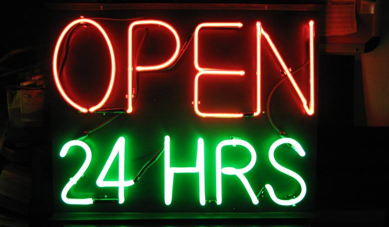

Kik vagyunk?
A Power Fitness nem csupán egy edzőterem, hanem egy közösség is, amely a fizikai erő, mentális kitartás és egészség jegyében jött létre. Itt mindenki számít, és célunk, hogy minden tagunknak segítsünk elérni az egyéni célokat.
Közösség Az Első Helyen:
Hiszünk abban, hogy egy erős közösség hozzájárul az egyéni sikerhez. A Power Fitness nem csak egy edzőterem, hanem egy hely, ahol új barátokra lelhetsz, és ahol az edzések nem csak fizikai, hanem szociális élmények is.
Csapatunk:
Csapatunk tagjai nem csak szakértők, hanem motivátorok és támogatók is. Mindannyian elkötelezettek vagyunk abban, hogy segítsünk neked elérni a legjobb formádat, legyen szó súlyvesztésről, izomépítésről, vagy egyszerűen csak az egészséged megőrzéséről.
Célunk:
A Power Fitness nem csak egy hely, ahol edzeni jársz. Mi olyan közösséget építünk, ahol az emberek motiváltak, egymást támogatják, és ahol mindenki képes elérni az álmai testét és életvitelét.
Az Edzőteremről:
Géppark:
Kardió Gépek:
A Power Fitness kardió gépparkja több mint csak futópadokat tartalmaz. Kiemelkedő elliptikális trénerek, spinning kerékpárok és lépcsőző gépek állnak rendelkezésre, hogy változatos és hatékony kardió edzést biztosítsanak.
Erősítő Gépek:
Egyesítsd az erőnlétet és az izomépítést a Power Fitness erősítő gépparkjával. A szabad súlyoktól kezdve a multifunkcionális gépekig, itt mindenki megtalálja a számára ideális eszközöket az izomzat fejlesztéséhez.

Funkcionális Terület:
Élvezd a változatosságot és a funkcionális edzés előnyeit a speciális területeinken. Kettlebellek, TRX kötelek és egyéb eszközök állnak rendelkezésre, hogy támogassák az olyan dinamikus edzéseket, amelyek fejlesztik az erőt, az egyensúlyt és a mobilitást.
Csoportos Edzés:
Power Fitness azonban nem csak a személyes edzésekre összpontosít. Csoportos edzéseink és óráink során élvezheted az együttműködés és motiváció erejét, miközben szakértő oktatóink irányításával formálhatod az alakodat.
Minden gépünk kiemelkedő minőségű, rendszeresen karbantartott és könnyen használható. A Power Fitness nem csak egy edzőterem, hanem egy életmód központja, ahol minden szükséges eszköz rendelkezésre áll, hogy segítsen elérni a fitneszcélokat és fokozza az életminőséget. Gyere el hozzánk, és tapasztald meg a Power Fitness különleges légkörét!
Nyitvatartás
Éld át az edzés örömet a nap bármely pontján! A Power Fitness megszakítás nélkül nyitva tart a hét minden napján annak érdekében, hogy kedvezzünk a korán kelőknek és az éjszakai baglyoknak egyaránt!
Címünk
9144 Kóny
Új Élet utca 15.
Hátsókert
Kapcsolat
Telefon: +36 30/123 4567
E-mail: powerfitness@gmail.com